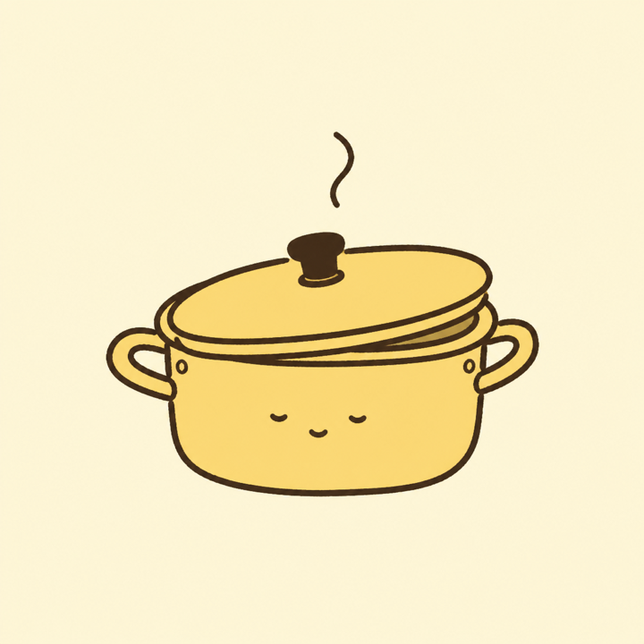

레시피 찾기
재료와 상황에 맞는 집밥을 골라보세요.
동훈님에게 맞는 12개추천순⌄
재료와 입맛에 맞는 한 끼를 찾아드려요.

보유 재료와 입맛을 함께 반영했어요
두부 · 대파 · 간장
15분 · 난이도 쉬움
최근 8번의 요리 기록에서 배웠어요
이번 주 CookPilot에서 자주 만든 메뉴예요
12분 · 1,284명이 만들었어요
★ 4.9
8분 · 926명이 만들었어요
★ 4.8
다음 추천에 반영되는 소중한 기록이에요
“된장은 조금만”
6일 전 · ★ 4.8
“단맛 없이 딱 좋아”
12일 전 · ★ 5.0
재료와 상황에 맞는 집밥을 골라보세요.
짭조름함은 줄이고 고소함을 살린 집밥 한 그릇
간장은 기본보다 15% 줄이고, 설탕 없이 들기름의 고소함을 살렸어요.
두부가 부서지지 않도록 뒤집지 말고, 숟가락으로 양념을 위에 천천히 끼얹어 주세요.
냄비 팁
국물이 자작하게 남았을 때 불을 끄면 두부가 촉촉해요.
만들고 평가할수록 추천이 더 정확해져요.
피드백 3개가 반영됐어요
내 입맛과 CookPilot 사용 환경을 관리해요.
Lv. 3 집밥러 · 다음 레벨까지 4번